往年习题
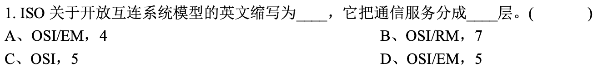
D => B: 开放互联系统参考模型
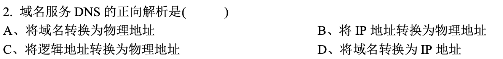
D
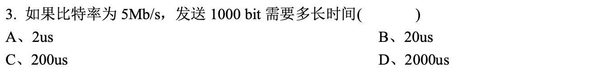
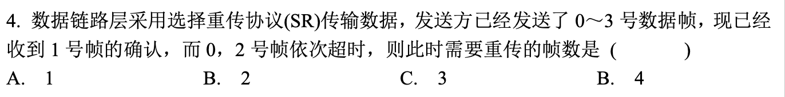
B
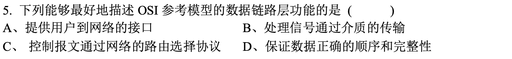
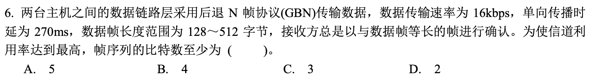
UNKNOWN => B
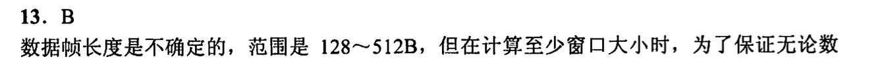
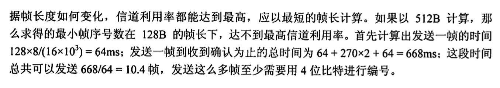
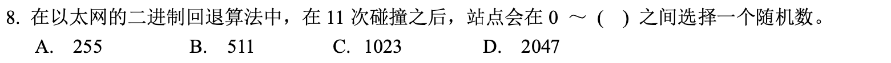
C
C=>B
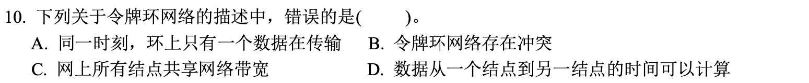
B
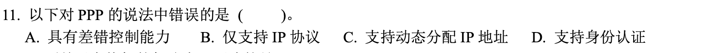
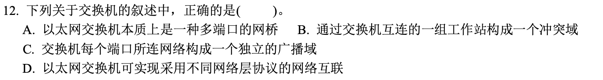
A
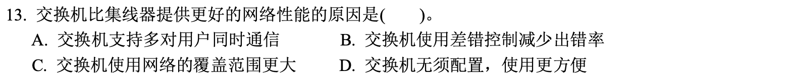
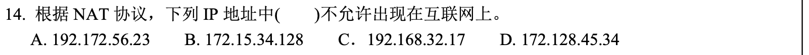
C
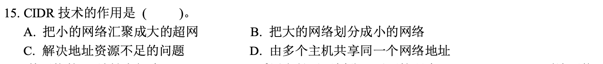
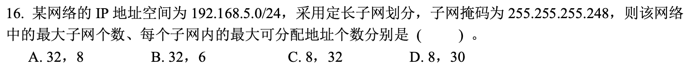
D=>B
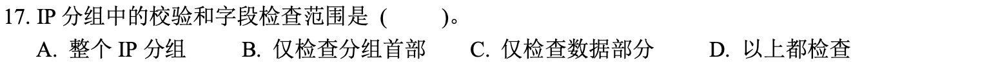
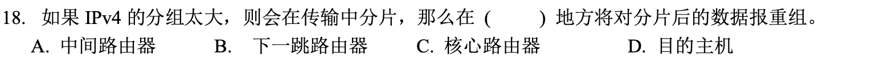
D
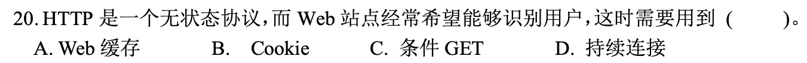
B
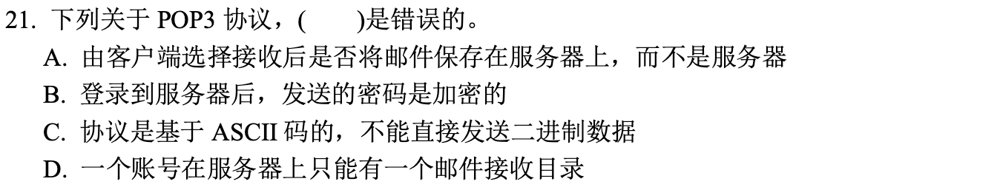
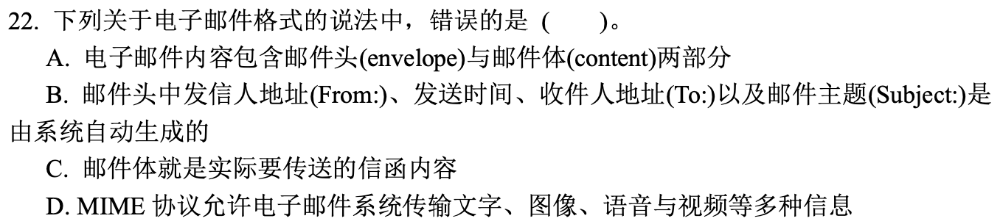
C=>B
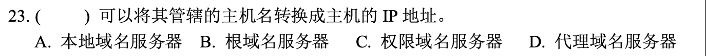
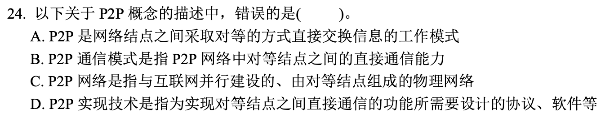
C
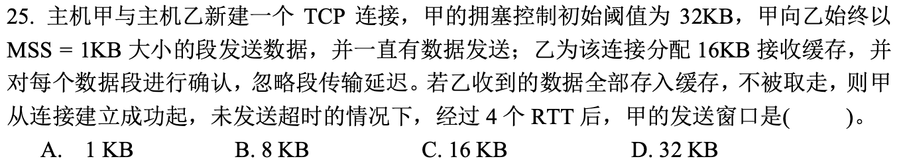
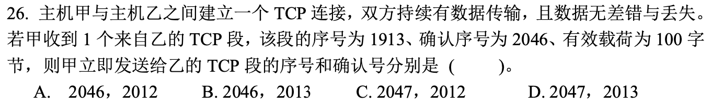
D=>B
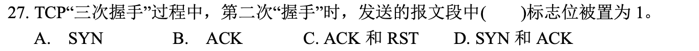
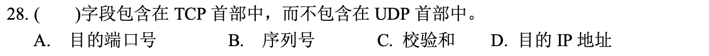
C=>B
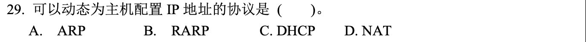
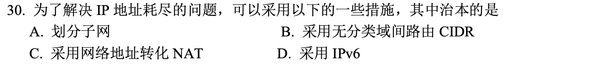
C=>D
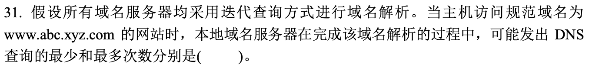
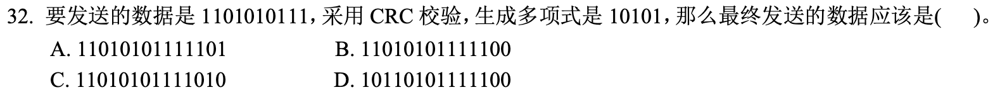
UNK=>B
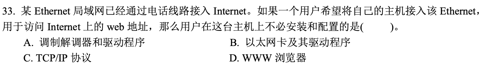
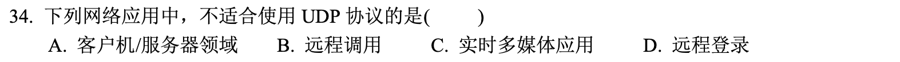
D
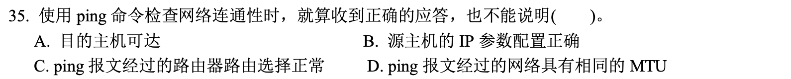
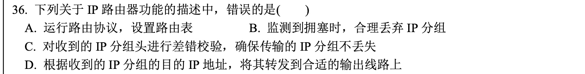
C
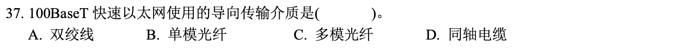

A
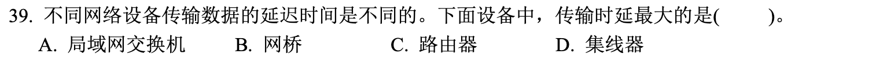
C=>B
缩写词汇库
高频词汇
-
HTTP: Hyper Text Transfer Prot. 超文本传输协议
-
SMTP: Simple Mail Transfer Protocol. 简单邮件传输协议
-
RTP: Real-Time Transport Protocol, 实时传送协议
-
QUIC: Quick UDP Internet Connections, 快速UDP互联网连接协议
-
DASH: Dynamic Adaptive Streaming over HTTP: 基于HTTP的动态自适应推流
-
TCP: Transfer Control Prot. 传输控制协议
-
UDP: User Datagram Prot. 用户报文协议
-
NAT: Network Address Translation, 网络地址转换
-
IP: Internet Protocol, 网际互连协议
-
NFV: Network Functions Virtualization, 网络功能虚拟化
-
PPP: Point to point protocol, 点对点协议
-
PDCP: Packet Data Convergence Protocol, 分组数据汇聚协议
-
Wi-Fi: 移动热点
-
DNS: Domain Name System 域名系统
-
URL: Uniform Res Locator, 统一资源定位符
-
ISP: Internet Service Provider, 互联网服务提供商
-
CSMA: Carrier Sense Multiple Access: 载波侦听多路存取
-
CD: Collision Detection, 碰撞检测
-
CA: Collision Avoidance, 碰撞避免
-
-
ICMP: Internet Control Message Protocol, Internet控制报文协议
相对低频词汇
-
DSL, Digital Subscription Line, 数字用户线
-
HFC, Hybrid Fiber Coax, 混合光纤同轴
-
CMTS, Cable Modem Termination System, 电缆调制解调器端接系统
-
FTTH, Fiber to the home, 光线到户
-
LAN, 局域网
-
LTE, Long term evolution, 长期演进
-
FDM, Freq Division Multiplexing, 频分复用
-
TDM, Time divi Multiplexing, 时分复用
大题
大题1
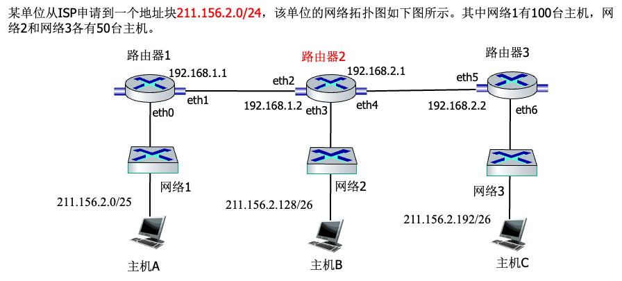
一个单位从ISP申请到一个地址块211.156.2.0/24，该单位的网络拓扑图如图2所示。其中网络1有100台主机，网络2和网络3各有50台主机。 请分析与计算下列问题：
- 每个网络的网络地址(形为a.b.c.d/x)是什么？(3分) 这是不等长的子网划分问题，需要从IP地址的第四个字节分别借出0、10和11比特表示网络1、网络2和网络3的子网号，那么网络1、网络2和网络3的网络号和子网号一起分别总占用25比特、26比特和26比特。 对于网络1来说，IP地址的第4个字节就可以表示为0*******，星号“”表示某个比特的取值1或0。那么第四个字节的取值范围为0～127，于是211.156.2.0表示网络1的子网络地址，211.156.2.127表示网络1的直接广播地址，该网络的网络地址块可以表示为211.156.2.0/25。 对于网络2来说，IP地址的第4个字节就可以表示为10*****，星号“”表示某个比特的取值1或0。那么第四个字节的取值范围为128～191，于是211.156.2.128表示网络1的子网络地址，211.156.2.191表示网络2的直接广播地址，该网络2的网络地址块可以表示为211.156.2.128/26。 对于网络3来说，IP地址的第4个字节就可以表示为11*****，星号“*”表示某个比特的取值1或0。那么第四个字节的取值范围为192～255，于是211.156.2.192表示网络1的子网络地址，211.156.2.255表示网络3的直接广播地址，该网络3的网络地址块可以表示为211.156.2.192/26。
- 若给每个网络中的网关地址分配该网络的最小可分配IP，则连接网络1~3的路由器接口IP和掩码分别为多少？(2分) 依据拓扑图可知，eth0、eth1和eth2分别是网络1、网络2和网络3的下一跳的接口，于是网络1~3的路由器接口IP地址分别为211.156.2.1、 211.156.2.129和211.156.2.193，掩码分别是/25、/26和/26。
- 为了使得主机A、B、C都能互相通信，画表说明一下路由器2的路由表应该是怎样的？(每条路由表包括目的网络地址，掩码，下一跳)
(3分)
由示意图可以看出，总有5个子网，其中包含路由器2和路由器1直接连接的网络以及路由器2和路由器3直接连接的网络。
- 目的网络地址 掩码 下一跳
- 192.168.1.0 /24 直接交付 接口为eth2
- 192.168.2.0 /24 直接交付，接口为eth4
- 211.156.2.0 /25 192.168.1.1
- 211.156.2.128 /26 直接交付，接口为eth3
- 211.156.2.192 /26 192.168.2.2
- 根据你的划分结果说明，当路由器2收到某个部门发出的一个目的地址为211.156.2.102的IP分组，应该向哪个接口转发？ (2分) 将211.156.2.102分别与上述的路由表中/24、/25和/26相“与”运算。发现与路由表中的第3个表项匹配。 即211.156.2.102 and /25 = 211.156.2.0，于是路由器2向接口eth2转发，下一跳是192.168.1.1。
大题2
(1)、假定站点A和B在同一个10Mbit/s以太网网段上。这两个站点之间的传播时延为225比特时间。现假定A开始发送一帧，并且在A发送结束之前B也发送一帧。 (1) 如果A发送的是以太网所容许的最短的帧，那么A在检测到和B发生碰撞之前能否把自己的数据发送完毕？请写出计算过程。（4分） 提示：在计算时应当考虑到每一个以太网帧在发送到信道上时，在MAC帧前面还要增加前同步码和帧定界符。
在问题(1)中的站点A和B在t=0时同时发送了数据帧。当t=225比特时间，A和B同时检测到发生了碰撞，并且在t=225+48=273比特时间完成了干扰信号的传输。A和B在CSMA/CD算法中选择不同的r值退避。假定A和B选择的随机数分别是RA=0和RB=1。试问： ①A和B各在什么时间开始重传其数据帧？（2分） ②A重传的数据帧在什么时间到达B？（2分） ③A重传的数据会不会和B重传的数据再次发送碰撞？（1分） ④B会不会在预定的重传时间停止发送数据？（1分）
第一小题：最小帧长为64字节，前同步码和帧定界符的长度为8字节，那么最小帧长的帧所需要的传输时间为:
(64+8)8=576比特时间；两个站点之间的传播时延为225比特时间，如有碰撞的话，那么冲突信号到达站点时间的最长值为：2252=450比特时间。(此外，冲突信号到达站点的时间最小值接近0，但没有实际意义)。
576 大于 450，因而，A在检测到和B发生碰撞之前不能把自己的数据发送完毕。
第二小题： (1)
在t=225+48=273比特时间完成了干扰信号的传输，但需要再经过时间t
=225比特时间使得信道上无信号在传播。虽然“基本退避时间为争用期为2t
，具体的争用时间为512比特时间(最小帧长64字节的传输时间)”，但在具体实践中取传播时延t是符合真实的场景的。
在t=225+48+225=498比特时间时，链路上无信号。
由于A和B选择的随机数分别是RA=0和RB=1，则有：
在t=225+48+225=498比特时间时，A开始重传其数据帧。这种传输时刻也可以理解为：t=225+48+0t
比特时间侦听信道(B也在发送干扰信号)，此时信道忙，再经历225比特时间后空闲。
在t=498比特时间 +
1225比特时间，B开始侦听信道，由于此时A的信号刚到达B，此时信道忙。由于CSMA/CD采用1-持续的侦听方式，再经历576比特时间[(64+8)*8=576)]后，也就说在t=498比特时间+1225比特时间(传播时延)+576比特时间(传输时延)
=1299比特时间，信道空闲，B开始传输。 (2)
由上述分析可知，A重传的数据帧在t=498比特时间 + 1225比特时间 =
723比特时间开始到达B。
(3) A重传的数据不会和B重传的数据再次发送碰撞 (4)
由于没有冲突的发生，B不会在预定的重传时间停止发送数据。